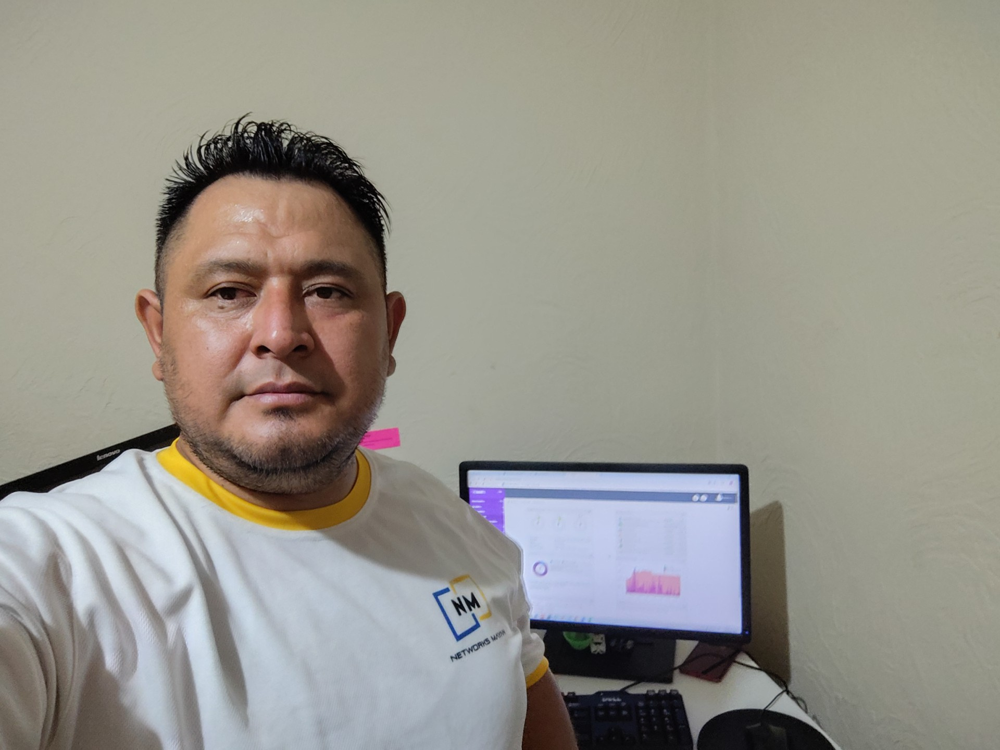
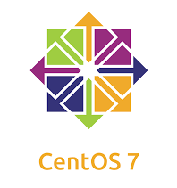

Hans Higueros
Estudios Realizados
Nacido en Guatemala y con 41 años, he forjado una sólida trayectoria en el ámbito de las tecnologías de la información, sustentada en estudios en Ingeniería en Sistemas y en múltiples cursos especializados en redes, administración de servidores. Mi formación combina teoría rigurosa con práctica aplicada, permitiéndome comprender en profundidad la infraestructura de telecomunicaciones, la gestión de redes cableadas e inalámbricas, y la implementación de soluciones de Voz IP, siempre con un enfoque orientado a resultados.
A lo largo de mi preparación, he desarrollado proyectos que integran la administración de servidores Linux y Windows, la optimización de entornos de red y la aplicación de tecnologías Cisco, consolidando competencias técnicas avanzadas y habilidades analíticas para resolver problemas complejos. Esta experiencia me ha dotado de una visión integral de los sistemas de información, desde la infraestructura hasta la programación, y de la capacidad de adaptarme rápidamente a nuevas herramientas y metodologías.
Comprometido con la actualización constante, busco siempre incorporar nuevas tecnologías y tendencias de la industria, fortaleciendo mi perfil profesional y garantizando que mi contribución en cualquier proyecto sea significativa y de alto impacto. Mi objetivo es combinar conocimientos técnicos y estratégicos para desarrollar soluciones innovadoras, eficientes y sostenibles en el dinámico mundo de la tecnología.
Cursos complementarios
